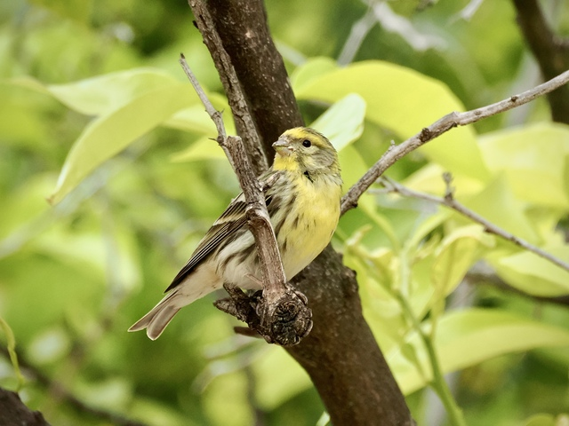
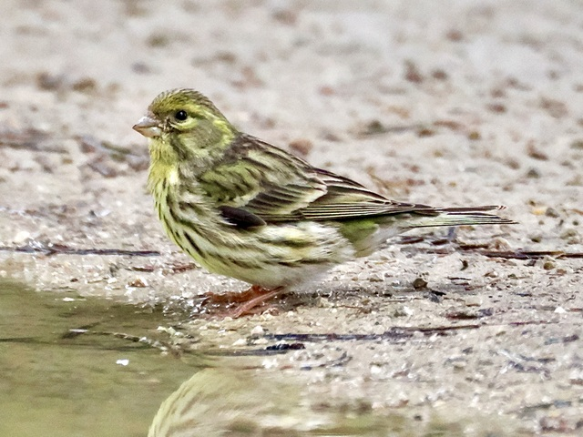

European Serin
Serinus serinus
Order: Passeriformes
Family: Fringillidae

A small, streaked, yellow finch with a tiny bill and a big voice. Male is brighter yellow on the head and breast; perches on a branch and sings an unending series of notes.

Female is less yellow, more streaked, and less vocal.